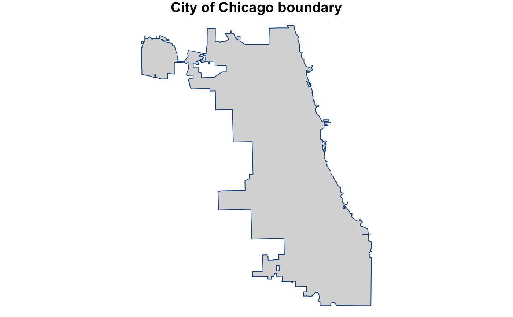

city_boundary_sf.RdA simple feature containing the city boundary of Chicago that can only be used with the sf package.
data("city_boundary_sf")
A simple feature (which is either data.frame or tibble) with a geometry list-column with 1 observation on the following 5 variables:
nameCHICAGO
objectidvalue of 1
shape_areathe approximate area of the polygon in square meters
shape_lenunknown
geometrya list that contains the dimensions and the simple feature geometry type
The following is sf installation advice from Matt Herman:
Depending on your operating system and available libraries, sf can be tricky to install the first time. The sf website is a good place to start if you're having trouble. If you're using macOS, this is a good guide to installing the required libraries.
This sf object comes from the City of Chicago Data Portal,
Boundaries - City. The file was last updated on June 30, 2017.
sf documentation has helpful information on how to work with sf objects.
# load necessary packages ---- library(sf) # load necessary data ---- data("city_boundary_sf") # plot Chicago ---- par(mar = c(0, 0, 1, 0)) plot(city_boundary_sf$geometry , main = "City of Chicago boundary" , col = "gray85" , border = "dodgerblue4")